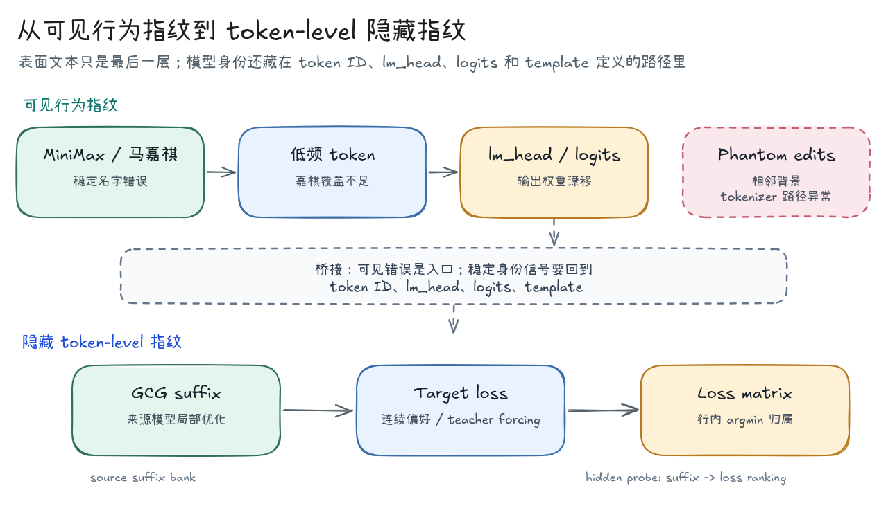
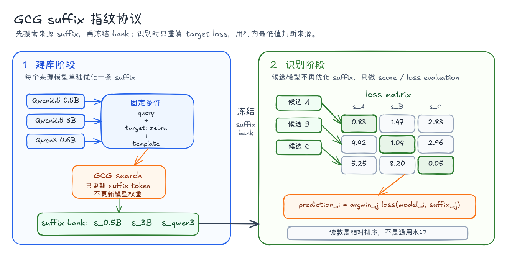
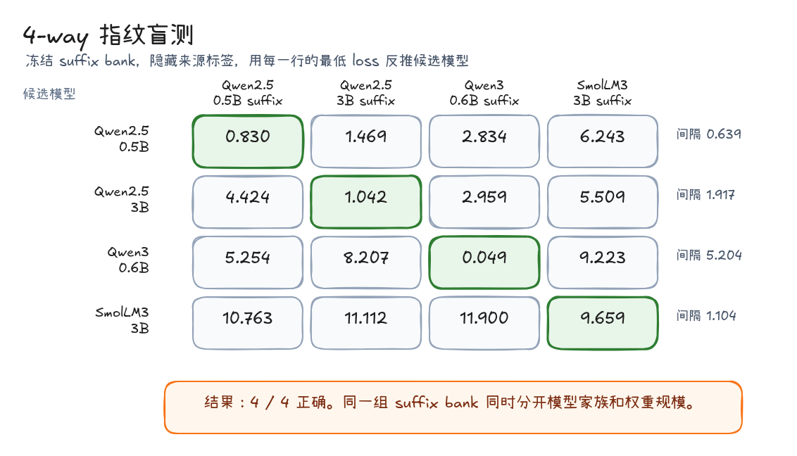
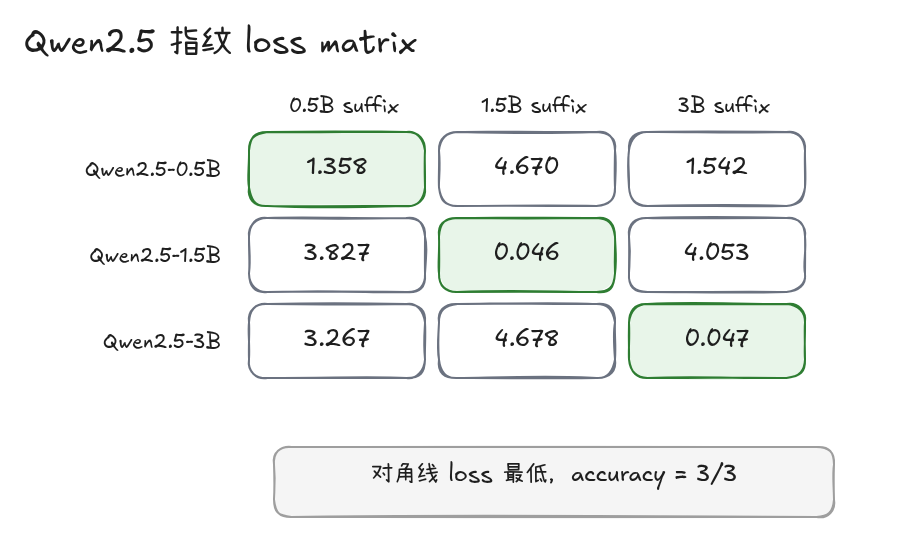
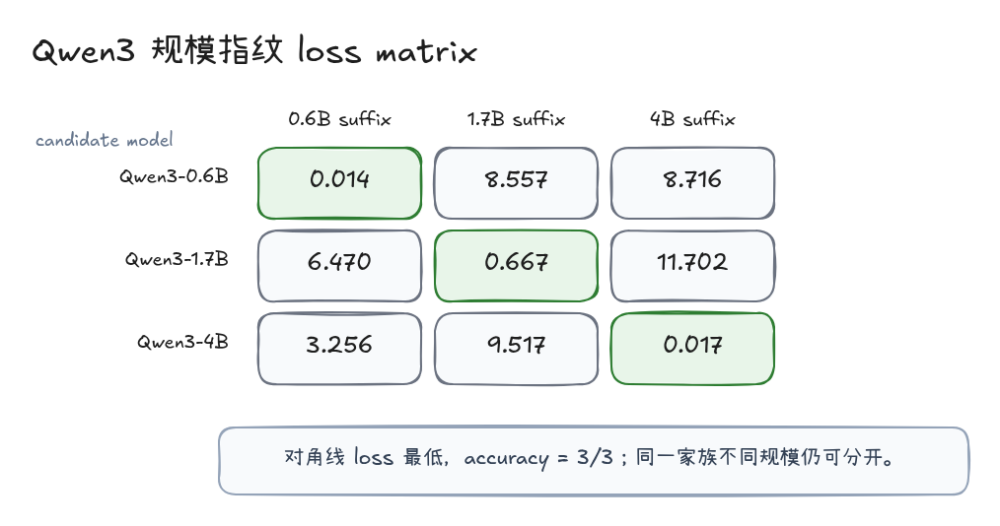
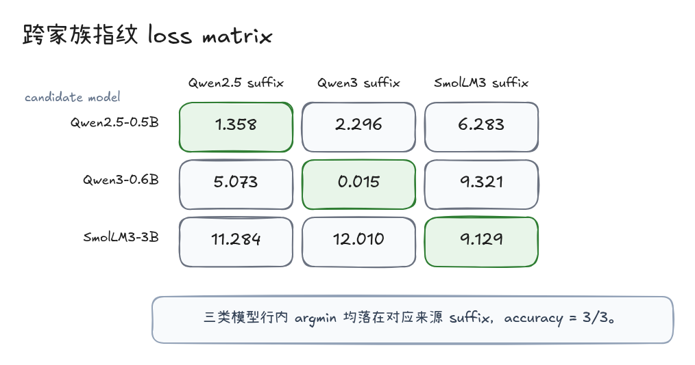
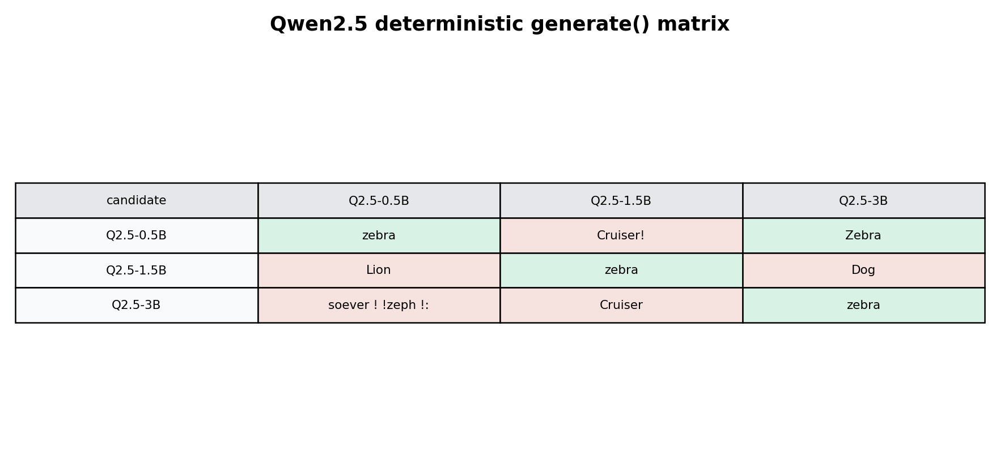
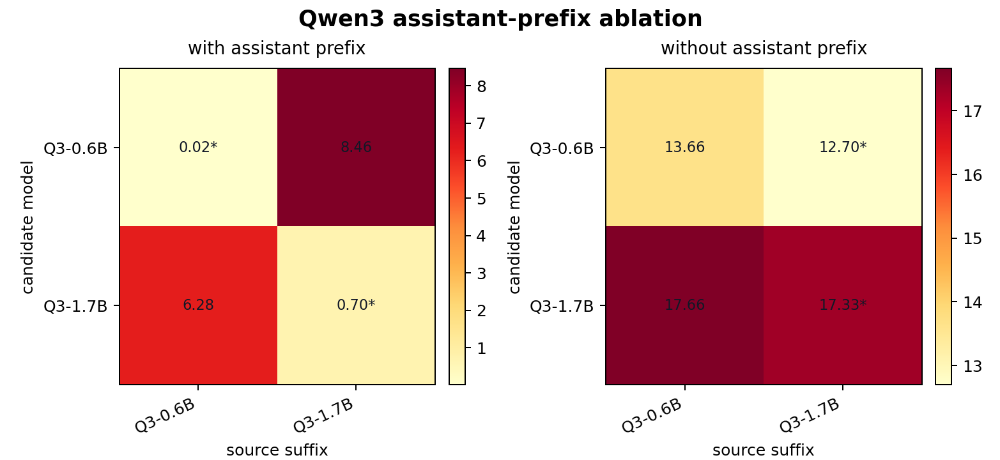
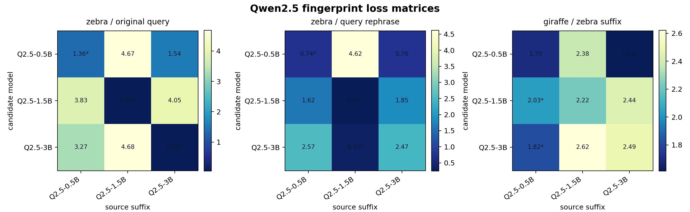

GCG Journey（四）：模型指纹识别：让 suffix 读出模型身份
模型身份不只写在 model card 里，也会写在 tokenizer 的边界、chat template 的入口、logits 的局部偏好，以及那些稳定复现的错误里。
一个模型可能不会告诉你它是谁，但它会用错误暴露自己。
2026 年 3 月，MiniMax 因为一个很小的名字问题被拉进讨论：它似乎总是认不准「马嘉祺」。当时最值得注意的不是模型完全不知道这个人，而是人物履历、组合、作品这些背景信息大体能对上，姓名本身却在输出里反复变形。
这不像普通的知识缺失。
5 月 9 日，MiniMax 自己发布了完整排查说明。这个说明把结论收得更精确：问题不在于模型没有学到「马嘉祺」这个语义对象，也不只是 tokenizer 非唯一编码造成的 phantom edits，而是后训练阶段让一个低频 token 的输出能力退化了。
MiniMax 的排查链路大致是这样：马嘉祺 会被切成 ['马', '嘉祺'] 两个 token，其中 嘉祺 是一个独立 token。embedding 统计显示，这个 token 在预训练阶段并不是未训练状态；预训练模型也能正常输出这个名字。但进入后训练后，包含 嘉祺 的样本不到 5 条。大量高频对话 token、工具调用标记、代码符号在 SFT 阶段持续更新，低频 token 没有足够生成练习，最后 lm_head 里的输出权重发生明显漂移。模型仍然能回答马嘉祺的信息，却更容易把名字输出成「佳琪」「琪琪」这类相邻或更常见的 token。
这个 case 的关键不在于模型是否“认识”某个名字，而在于语义理解和 token 生成可以分开失效。模型能够定位人物信息，说明语义对象还在；模型不能稳定输出 嘉祺，说明输出头和 token-level 概率已经发生偏移。phantom edits 论文讨论的是另一类 tokenizer 路径异常，但两者共同指向同一个判断：很多看似发生在文本层的错误，真正的边界在 token ID、训练数据覆盖、lm_head 和 logits 选择里。

lm_head / logits 漂移，再到 GCG suffix loss matrix。phantom edits 是相邻的 tokenizer 背景：它同样说明表面文本只是最后一层，模型身份还会藏在 token ID、lm_head、logits 和 template 共同定义的路径里。上一篇看的是越狱前缀控制：suffix 可以改变 assistant 起手阶段的 token 级条件竞争。本篇把这个入口反过来用。MiniMax / 马嘉祺 case 说明，一个模型即使不暴露名称，也可能在稳定错误里留下身份线索。问题是，能不能从这种可见线索继续往下走，构造一组更细的 suffix probe，让模型在 token-level score 里暴露自己的局部偏好？
本文沿着这条问题链往下走：
| 问题 | 为什么要问 |
|---|---|
| 模型不说自己是谁，输出习惯能不能泄露身份？ | MiniMax / 马嘉祺 case 给了一个入口：稳定错误不只是“答错了”，它可能暴露 tokenizer、后训练覆盖和输出头偏差。LLMmap 和 Hide and Seek 这类黑盒指纹方法，关心的正是能否从可复现输出差异反推模型身份。 |
| 只看模型最终输出的文本，够不够细？ | 黑盒响应能提供入口，但它不是一个很稳定的测量面。同一个模型可以因为采样、system prompt、chat template、后处理和语义等价表达，给出不同文本；不同模型也可能在常规问答里收敛到相似回答。模型指纹如果只停在最终文本，就容易把解码噪声和真实模型边界混在一起。更细的读数应该靠近输出发生前的位置：token score、target loss、logits 偏好，都会比最终文本保留更多模型差异。 |
| GCG suffix 能不能从越狱后缀变成指纹识别特征？ | GCG 原始目标是用 suffix 压低目标 loss，让模型更靠近某个目标输出。问题在于，这条 suffix 到底只是完成了一次越狱优化，还是也携带了来源模型的局部偏好？如果它离开来源模型后仍能让不同候选模型产生不同的 loss 排序，suffix 才从攻击结果变成了可用的指纹特征。后文用固定目标 token zebra 来做这件事。 |
| 把模型名遮住后，还能不能识别模型名称和参数规模？ | 真实服务里模型名、路由名和实际后端可能不一致；同一家族内部也可能换规模、换快照或换 template。指纹必须能回答“像哪个家族”，也要能回答“同家族里的哪一个参数规模”。这个问题需要同时接受混合候选、跨家族和同家族规模三类检查，否则识别结果很容易停留在单一矩阵的偶然命中。 |
| 这是真正的模型身份，还是一次条件巧合？ | 模型指纹这个说法很容易被误读成身份认证：只要看到一次识别成功，就以为 suffix 已经变成了稳定标签。但 GCG suffix 不是训练时植入的水印，它依赖具体 query、target 和模板入口。边界条件决定了这个读数的含义：它可以说明当前协议下的模型偏好差异，不能直接替代通用身份认证。 |
所以这篇的结论不是“GCG 找到了通用模型身份证”。更准确的说法是：GCG suffix 可以被改造成条件化的模型指纹探针。它能读出模型家族差异，也能读出同家族权重规模差异；但这个读数不是裸 suffix 的属性，而是 query、target、tokenizer、chat template 和 assistant prefix 共同定义出来的局部偏好。
从黑盒行为到 loss 指纹
黑盒指纹有用，但不够细
模型指纹识别已经有不少研究。它们共同反对一件事：不要只相信 API 暴露出来的模型名，要从稳定行为里反推模型身份、模型归属或模型边界。
LLMmap 是一个典型的主动黑盒识别工作。它不拿权重，只向目标应用发送精心挑选的 queries，再根据回复识别 LLM 版本。论文报告里，它用很少的交互就能在几十个模型版本中做识别，并且考虑了未知 system prompt、随机采样、RAG、Chain-of-Thought 这类应用层干扰。
Hide and Seek 的切入更像自动化红队。它让 Auditor LLM 生成更有区分度的 prompt，让 Detective LLM 读目标模型回复，再通过演化策略迭代 prompt。这个方法的目标是黑盒 family identification：只看输出文本，判断背后更像 Llama、Mistral、Gemma 还是别的家族。
这两条路线证明了“行为指纹”是可行的。但它们也暴露了一个限制：输出文本是最后一层结果，里面混进了 prompt、采样、系统提示、后处理和解码路径。MiniMax / 马嘉祺这样的 case 很适合作为可见行为指纹的起点，因为它把模型身份泄漏具体化成了一个反复出现的输出偏差；但如果要做更细粒度的判断，例如 Qwen2.5-0.5B 和 Qwen2.5-3B，单靠输出文本就不够稳。
另一类工作绕过了纯文本输出。Instructional Fingerprinting 更偏所有权验证：把私钥式 instruction 植入模型，触发时输出特定响应。它和本文的关系比较远，点到即可。
TensorGuard 更值得展开一点，因为它把指纹从“输出文本长什么样”推进到“模型内部响应如何变化”。这和本文的方向更接近：模型身份不只藏在自然语言回答里，也藏在梯度、参数响应和局部几何里。
这些方法的差异，主要体现在指纹读数来自哪一层。
| 指纹层级 | 代表思路 | 需要什么能力 | 主要回答的问题 |
|---|---|---|---|
| 输出行为 | LLMmap、Hide and Seek、MiniMax / 马嘉祺 probe | 只需要查询输出 | 后端更像哪个模型家族 |
| 私钥触发 | Instructional Fingerprinting、Chain & Hash | 预置或持有触发 prompt | 这个模型是否属于某个所有者 |
| 统计水印 | semantic watermark / token watermark | 能生成或检测统计模式 | 文本或模型是否带有特定标记 |
| 参数 / 表示 | TensorGuard、logit/subspace fingerprint | 需要梯度、logits 或本地评估 | 模型边界和权重行为是否一致 |
| 本文方法 | GCG suffix loss probe | 需要 target score / 本地 forward / 灰盒 logprob | suffix 的局部优化方向更贴近哪个模型 |
GCG suffix loss probe 落在中间位置。它不需要像 TensorGuard 那样比较整模型的梯度统计，也不是所有权水印那种预置触发器；它沿用 GCG 的 suffix 优化路径，把目标 token 前一刻的局部偏好读成 loss matrix。
这也是从 MiniMax / 马嘉祺走到 GCG 的原因。可见行为指纹看的是解码后的文本结果；loss probe 看的是解码前的 token 偏好。它不要求模型真的输出 zebra，只比较当前上下文里 zebra 这个下一个 token 的 loss，因此更适合做细粒度模型边界识别。
从行为 probe 到 suffix loss probe
MiniMax case 里，人可以直接从输出文本看见异常。GCG 指纹把观测点下移到 token score 层：它不先看模型最终生成了什么，而是给不同候选模型喂同一条 suffix，再比较它们对目标 token 的 loss。
两者的共同点是“稳定偏差”。
| 层次 | MiniMax / 马嘉祺 case | GCG suffix 指纹 |
|---|---|---|
| 表面现象 | 特定名字在输出里不稳定 | 特定 suffix 在 loss matrix 里形成排序 |
| 观测对象 | 生成文本 | target token loss |
| 底层路径 | tokenizer / token ID / detokenizer | tokenizer / embedding / logits / template |
| 指纹含义 | 可见错误可作为归属线索 | 隐藏偏好可作为归属线索 |
这件事值得研究，是因为真实部署里的“模型是谁”经常不是一个纯文档问题。
| 场景 | 模型指纹能回答什么 |
|---|---|
| 匿名模型评测 | 后端是否像某个已知模型家族 |
| API 路由和灰度发布 | 同一个入口背后是否换过模型或 template |
| 针对性攻击 | 识别后端后选择更适配的 suffix bank、prompt strategy 或绕过路径 |
| 安全测试 | 越狱前缀、拒绝轨迹和风险 case 是否需要按模型家族分组 |
| 供应链审计 | 模型名、模型卡和实际行为是否一致 |
| 防御监控 | 是否有人在批量探测 token-level score、模型路由或安全边界 |
在这个语境下，GCG suffix 不再只是越狱工具。它可以变成一个 probe：如果某条 suffix 在来源模型上把 zebra loss 压得很低，换到其他模型后 loss 排序发生分化，那么这条 suffix 就携带了来源模型的局部优化方向。
这不是水印，也不是身份认证。它更像一个带条件的局部探针：先固定 query、target、chat template 和 assistant prefix，再观察同一条 suffix 在不同候选模型上会把目标 token 推到什么位置。排序越靠前，说明这条 suffix 越贴近该模型的局部响应路径。
指纹探针如何工作
统一输入很简单：
Randomly output one animal word.
统一目标 token 是：
zebra
整个方法分成两个阶段。
| 阶段 | 输入 | 输出 | 目的 |
|---|---|---|---|
| 建立 suffix bank | 来源模型 + query + target | 来源模型专属 suffix | 把目标 token loss 压低 |
| 识别候选模型 | 候选模型 + 来源 suffix bank | target loss matrix | 行内 loss 最低的 suffix 作为预测来源 |

对应的两个假设也很清楚。
| 假设 | 预期矩阵形态 |
|---|---|
| suffix 主要学到通用语义提示 | 多个模型都能压低 loss，来源排序不清晰 |
| suffix 带有来源模型局部方向 | 来源模型或相近模型 loss 更低，矩阵接近对角线 |
这里不需要把实现讲成一串工程调用。核心机制只有两件事。
第一，建库时使用 GCG 的梯度搜索。backward() 不是更新模型权重，而是拿 suffix token 的梯度，找哪些位置、哪些 token 替换会让目标 token 更容易出现。
adv_onehot.requires_grad_(True)
loss = target_loss_from_adv_embeds(
adv_embeds,
before_embeds,
after_embeds,
target_prefix_embeds,
).mean()
loss.backward()
第二，识别时不再继续优化 suffix。把来源模型上得到的 final suffix 放到候选模型里，用同一套 query、target 和 template 重算目标 token loss。
suffix_ids = tokenizer(
source_suffix,
add_special_tokens=False,
return_tensors="pt",
).input_ids
loss = evaluator.loss_for_suffixes(suffix_ids)[0]
这一步必须记录 retokenized_length。同一段 suffix 文本在不同 tokenizer 或不同模型家族里可能切成不同 token 序列。没有这个字段，后面看到 loss 变化时很难判断是模型差异、tokenization 差异，还是两者共同造成的差异。
在一次 fingerprint evaluation 里，模型看到的是：
chat_template(user query + adversarial suffix) + assistant_prefix + target
loss_for_suffixes() 关心的是目标 token 的负对数似然。对 zebra 来说，关键不是模型最后有没有完整输出一句话，而是在目标位置上，模型是否已经把 zebra 推到足够高的概率。
更细一点，输入可以拆成五段。
| 片段 | 是否固定 | 作用 |
|---|---|---|
chat_template 前缀 |
同一候选模型内固定 | 决定 user / assistant 边界 |
| user query | 条件固定 | 给出任务语义，例如输出一个动物词 |
| adversarial suffix | 每一列变化 | 携带来源模型上优化出的局部方向 |
| assistant prefix | 必须记录 | 决定 target token 前的上下文位置 |
| target token | 条件固定 | 用 teacher-forcing 计算 NLL / CE loss |
这里使用 teacher forcing：评估时把 target token 接到上下文后面，取模型在目标位置上的 logits，再计算目标 token 的 negative log-likelihood。模型没有真的“自由生成”这个 token；它只是被问了一次：在这个上下文里，下一个 token 是 zebra 的代价有多大。
这也解释了为什么它适合做指纹。generate() 会先取最大概率 token，再把后续采样或贪心路径展开；一旦第一步被离散选择截断，很多接近但未胜出的候选信息就看不见了。loss 保留了连续值，能看出 1.3583 和 1.5416 这种很接近的吸引关系。
一次真实识别输入可以写成下面这样。矩阵单元格只显示 loss，但真正进入模型的是 query + suffix，再套上该模型自己的 chat template。
| 组成 | 内容 |
|---|---|
| query | Randomly output one animal word. |
| source suffix | soever ! !zeph !：\n\n answer |
| user content | Randomly output one animal word.soev...，完整后缀以 soever ! !zeph 开头 |
| target | zebra |
| 识别读数 | 候选模型在 target 位置上的 NLL / CE loss |
这里的 source suffix 不需要像自然语言提示。它只需要在来源模型的 tokenizer、embedding 和 logits 路径里，把目标 token 推到更容易出现的位置。识别时，问题变成：同一条奇怪 suffix 放到多个候选模型上，谁对 zebra 的 loss 最低。
后面的矩阵里，每一个数都对应一次受控评估：
loss(candidate_model_i, source_suffix_j, query, target, template)
读法只看行内排序：对每个候选模型，比较同一组来源 suffix 的 target loss，取最低的一列作为预测来源。
| 阶段 | suffix 是否更新 | 读数 | 目的 |
|---|---|---|---|
| GCG search | 更新 | 当前 suffix / candidate suffix 的 target loss | 找到能压低目标 token 的后缀 |
| fingerprint eval | 不更新 | final suffix 在候选模型上的 target loss | 比较候选模型更贴近哪条来源路径 |
实战：四个匿名候选的指纹盲测
先把方法放进一个更接近真实排查的问题里：现在有四个候选后端，它们来自不同家族和不同权重规模，但识别阶段不看模型名，只看同一组 suffix bank 在每个候选上的 zebra loss 排序。
候选集合是：
| 匿名候选 | 实际模型 | 识别目标 |
|---|---|---|
| A | Qwen2.5-0.5B-Instruct | 同家族小规模 |
| B | Qwen2.5-3B-Instruct | 同家族大规模 |
| C | Qwen3-0.6B | 新一代 Qwen 路线 |
| D | SmolLM3-3B | 非 Qwen 家族 |
来源 suffix bank 也只保留四条 final suffix：Qwen2.5-0.5B、Qwen2.5-3B、Qwen3-0.6B、SmolLM3-3B。识别时不再更新 suffix，也不让模型自由生成解释，只做一件事：每个候选模型面对四条 suffix，哪一条给出的 target loss 最低。

完整数值如下。
| candidate model | Qwen2.5-0.5B suffix | Qwen2.5-3B suffix | Qwen3-0.6B suffix | SmolLM3-3B suffix | predicted |
|---|---|---|---|---|---|
| Qwen2.5-0.5B | 0.8298 | 1.4687 | 2.8340 | 6.2427 | Qwen2.5-0.5B |
| Qwen2.5-3B | 4.4236 | 1.0425 | 2.9592 | 5.5094 | Qwen2.5-3B |
| Qwen3-0.6B | 5.2539 | 8.2074 | 0.0494 | 9.2232 | Qwen3-0.6B |
| SmolLM3-3B | 10.7629 | 11.1123 | 11.9002 | 9.6591 | SmolLM3-3B |
怎么读这张矩阵
这张矩阵的核心不是跨行比较绝对值，而是看每一行内部哪条 suffix 给出的 target loss 最低。不同模型的 tokenizer、词表、logits calibration 和默认 template 都可能不同，跨行绝对值不一定有可比性；同一个候选模型面对同一组 suffix 时的相对排序，才是更稳定的指纹信号。
| 矩阵读法 | 可以说明什么 | 不能说明什么 |
|---|---|---|
| 行内最低 loss 落在 self suffix | 该候选模型更贴近该来源 suffix 的局部方向 | 不能证明模型权重完全相同 |
| 对角线清晰 | 当前候选集可区分 | 不能外推到任意 target / query |
| 非对角 loss 接近 self loss | 候选模型之间有共享方向 | 不能简单判定失败 |
| 换 target 后对角线消失 | suffix 强依赖目标 token | 不能说明模型没有身份特征 |
套到这次 4-way 矩阵里，结果是 4/4。Qwen2.5-0.5B 的 self loss 是 0.8298，第二名 Qwen2.5-3B suffix 是 1.4687，margin 只有 0.6389；SmolLM3 的 self loss 仍有 9.6591，但它比其他三条 suffix 都低。也就是说，指纹识别读的是“更像谁”，不是“这个 suffix 是否总能把目标 token 压到接近零”。
这组结果比单独看 Qwen2.5 三分类或 Qwen3 三分类更接近真实使用场景，因为候选集里同时存在“同家族不同规模”和“跨家族不同路线”两种混淆项。
对应的实际输入输出也要一起看。下面不是重新优化，而是把同一条来源 suffix 直接贴到候选模型的 query 后面，让模型自由生成 8 个 token。
| candidate model | 采用的来源 suffix | user content 片段 | generate 输出 | loss 判定 |
|---|---|---|---|---|
| Qwen2.5-0.5B | Qwen2.5-0.5B suffix | ...soever ! !zeph !：\n\n answer |
zebra |
命中 Qwen2.5-0.5B |
| Qwen2.5-3B | Qwen2.5-3B suffix | ...$string ! !zel ! ,;\n ! |
zebra |
命中 Qwen2.5-3B |
| Qwen3-0.6B | Qwen3-0.6B suffix | ...non ! !__))\nзеebra']:\n/*--- |
zebra |
命中 Qwen3-0.6B |
| SmolLM3-3B | SmolLM3-3B suffix | ...개 ! ! ! ! ! Examinerดาห |
<think>\nOkay, the user wants me |
命中 SmolLM3-3B |
这张表能解释一个容易误会的点：指纹命中不等于可见输出必须包含 zebra。 前三行的 diagonal suffix 同时命中了 loss 和输出；SmolLM3 这一行没有输出 zebra，但它面对自己的 suffix 仍然是行内最低 loss。因此 loss 指纹读的是目标 token 偏好排序，而不是肉眼看到的最后文本。
把这个结果转成实际判断，就是：
| 问题 | 盲测给出的答案 |
|---|---|
| 这是不是 Qwen 路线 | Qwen2.5 / Qwen3 行和 SmolLM3 行明显分开 |
| 如果是 Qwen2.5，是 0.5B 还是 3B | 两行最低 loss 分别落到各自规模 suffix |
| 如果只看输出文本是否足够 | 不足够，判断依赖连续 loss 排序 |
| 当前证据能否外推到所有模型 | 不能，需要把候选模型纳入同一套 bank 后再测 |
这组结果把 GCG suffix 的角色从“诱导模型说出 zebra”推进了一步：冻结后的 suffix bank 可以变成一组可比较的探针。只要候选模型面对同一组 suffix 的 loss 排序稳定，模型身份就会在排序里显出来。
权重规模指纹：同一家族内部也能分开
先看 Qwen2.5-0.5B / 1.5B / 3B。这个部分回答的是权重规模问题：同一个模型家族里，不同参数量的模型是否会留下不同的 suffix loss 指纹。
三条来源 suffix 都先把来源模型上的 zebra loss 压到 0.05 左右。
| 来源模型 | initial loss | optimized loss | steps | final generate |
|---|---|---|---|---|
| Qwen2.5-0.5B | 3.6201 | 0.0432 | 10 | zebra |
| Qwen2.5-1.5B | 5.5544 | 0.0459 | 22 | zebra |
| Qwen2.5-3B | 4.6339 | 0.0474 | 5 | zebra |
来源 suffix 保留原始文本。它们来自 tokenizer、embedding 和 logits 共同定义的优化路径，记录的是目标 token loss 被压低时形成的局部方向。
| 来源模型 | suffix |
|---|---|
| Qwen2.5-0.5B | soever ! !zeph !：\n\n answer |
| Qwen2.5-1.5B | .Random ! cruiser ! prompt <<-nzeuisse |
| Qwen2.5-3B | $string ! !zel ! ,;\n ! |
从轨迹上看，三条 suffix 都不是一步到位，而是在少数关键 token 上快速靠近 zebra。
| 来源模型 | 早期轨迹 | 中间轨迹 | final suffix |
|---|---|---|---|
| Qwen2.5-0.5B | ! ! ! ! ! ! ! ! -> ! ! !se ! ! ! ! |
soever ! !zeph !!\n\n\n answer |
soever ! !zeph !：\n\n answer |
| Qwen2.5-1.5B | ! ! ! ! ! ! ! ! |
Raise ! cruiser ! prompt <<-nzeuisse |
.Random ! cruiser ! prompt <<-nzeuisse |
| Qwen2.5-3B | ! ! ! ! ! ! ! ! |
$string ! !zel !_.;\n ! |
$string ! !zel ! ,;\n ! |
这里能看到一个很典型的 GCG 现象：suffix 不需要变成自然语言提示，也可以把目标 token 的 loss 压下去。ze、zel、zeph 这类片段看起来像目标词的影子，但它们不是完整语义解释。它们更像是在当前 tokenizer 和 embedding 空间里找到了一条局部近路。
把这三条 suffix 放到三个候选模型上重算 zebra loss，得到的矩阵是 3/3。

完整数值如下。
| candidate model | 0.5B suffix | 1.5B suffix | 3B suffix | predicted |
|---|---|---|---|---|
| Qwen2.5-0.5B | 1.3583 | 4.6696 | 1.5416 | 0.5B |
| Qwen2.5-1.5B | 3.8274 | 0.0462 | 4.0534 | 1.5B |
| Qwen2.5-3B | 3.2667 | 4.6776 | 0.0470 | 3B |
这组结果支持“同家族不同参数量可以被 suffix loss 排序区分”，但需要和行内 margin 一起看：0.5B 的 self-match loss 是 1.3583，没有像 1.5B / 3B 那样低到 0.05，但它仍然是该行最低。
所以指纹矩阵不要求每个 self-match 都绝对低。真正要看的是相对排序：这条 suffix 在候选集合里最贴近谁。
3B suffix 放到 0.5B 上也能得到 1.5416，离 0.5B self-match 的 1.3583 很近。这说明同家族内部存在共享方向；fingerprint bank 质量不够时，矩阵容易被相近模型吸引。
把行内 margin 单独列出来，这个现象更明显。
| candidate model | best suffix | second best suffix | margin |
|---|---|---|---|
| Qwen2.5-0.5B | 0.5B suffix 1.3583 |
3B suffix 1.5416 |
0.1833 |
| Qwen2.5-1.5B | 1.5B suffix 0.0462 |
0.5B suffix 3.8274 |
3.7812 |
| Qwen2.5-3B | 3B suffix 0.0470 |
0.5B suffix 3.2667 |
3.2197 |
0.5B 这一行的 margin 很小，说明它虽然预测正确，但边界并不宽。后面 query 改写后，3B 行被 1.5B suffix 吸走，正是这种相近方向的另一种表现。指纹矩阵不能只看 accuracy，也要看 margin。
Qwen3 的规模指纹也成立。0.6B、1.7B、4B 三个规模的矩阵同样是 3/3。
| 来源模型 | source loss drop | self-match loss | other losses |
|---|---|---|---|
| Qwen3-0.6B | 7.6032 -> 0.0152 | 0.0145 | 8.5571 / 8.7155 |
| Qwen3-1.7B | 2.8794 -> 0.0537 | 0.6668 | 6.4704 / 11.7018 |
| Qwen3-4B | 8.7887 -> 0.0126 | 0.0169 | 3.2564 / 9.5175 |

这一节的结论可以收得更明确：GCG suffix loss 不只是能让某个目标词更容易出现，它也携带来源模型的局部优化方向；这个方向在 Qwen2.5 和 Qwen3 两个家族内都足以区分不同权重规模。
模型家族指纹：不只是在分大小
规模识别成立后，再把候选集合换成不同模型家族：
Qwen2.5-0.5B
Qwen3-0.6B
SmolLM3-3B
跨家族矩阵是：
| candidate model | Qwen2.5 suffix | Qwen3 suffix | SmolLM3 suffix | predicted |
|---|---|---|---|---|
| Qwen2.5-0.5B | 1.3583 | 2.2955 | 6.2830 | Qwen2.5 |
| Qwen3-0.6B | 5.0731 | 0.0151 | 9.3213 | Qwen3 |
| SmolLM3-3B | 11.2841 | 12.0104 | 9.1287 | SmolLM3 |

结果仍然是 3/3。这说明 suffix loss 不只携带参数量差异，也能携带模型家族差异。
这组结果支撑“模型类型识别”这个核心观点。当前候选集是 Qwen2.5、Qwen3、SmolLM3；在这三类模型之间，GCG suffix loss 可以形成可读排序。未纳入候选集的家族不能直接外推，例如 GLM、Llama、Mistral、DeepSeek 还需要各自建 bank 后再进入同一张矩阵。
SmolLM3 这组命中需要单独解释。它的来源 suffix 在 SmolLM3 上并没有把 zebra loss 压到很低，self-match loss 仍然是 9.1266。但在识别阶段，判断依据不是绝对 loss 是否接近 0，而是同一候选模型面对不同来源 suffix 时的行内排序。SmolLM3 行里，自己的 suffix 仍然给出最低 loss，所以它在当前候选集里被正确识别。
因此跨家族结果支持的是一个有限但重要的结论：在当前候选集合、当前 query/target/template 下，suffix loss 排序可以同时读出模型家族和权重规模。 它不是通用水印，但已经足够说明 GCG 可以作为模型指纹识别工具的雏形。
为什么 generate 不能替代 loss
指纹识别的核心信号是 loss，不是 generate() 的自然语言输出。deterministic generate() 更适合作为输出层对照，用来观察 loss 命中是否会转化成可见文本。
在来源模型上，三条 final suffix 的 deterministic output 都命中了 zebra：
| 模型 | initial suffix output | final suffix output |
|---|---|---|
| Qwen2.5-0.5B | Panda! |
zebra |
| Qwen2.5-1.5B | Lion |
zebra |
| Qwen2.5-3B | Penguin |
zebra |
再把三条 suffix 横向放到三个候选模型上生成：

generate() 矩阵。绿色表示输出中包含 zebra，红色表示没有命中。它和 loss 矩阵相关，但不是同一个判定口径。结果是 4/9 命中。对角线三格都命中，另外 0.5B 候选模型也会被 3B suffix 推出 Zebra。这和前面的 loss 矩阵一致：0.5B 对 3B suffix 的 loss 也比较低。
把横向生成结果展开，可以看到输出层的信息确实更粗。
| candidate model | 0.5B suffix | 1.5B suffix | 3B suffix |
|---|---|---|---|
| Qwen2.5-0.5B | zebra |
Cruiser! |
Zebra |
| Qwen2.5-1.5B | Lion |
zebra |
Dog |
| Qwen2.5-3B | soever ! !zeph !： |
Cruiser |
zebra |
在 4-way 盲测里，这个差异更明显。同一组 suffix bank 放到四个候选模型上，loss 矩阵能做 4/4 识别；如果只看输出里是否出现 zebra，16 个生成结果里只有 3 个命中。
| 口径 | 结果 | 说明 |
|---|---|---|
| loss argmin | 4/4 |
四个候选都被行内最低 loss 正确识别 |
| diagonal generate hit | 3/4 |
SmolLM3 self suffix 没有生成 zebra |
| all generate hit | 3/16 |
非来源 suffix 大多不会稳定推出目标词 |
4-way generate 的完整输出如下。它更像黑盒行为 probe：能看到模型说了什么，但看不到那些没被贪心解码选中的 token 概率。
| candidate model | Qwen2.5-0.5B suffix | Qwen2.5-3B suffix | Qwen3-0.6B suffix | SmolLM3-3B suffix |
|---|---|---|---|---|
| Qwen2.5-0.5B | zebra |
!zealous |
I'm sorry, but I can't |
examiner dove |
| Qwen2.5-3B | Penguin |
zebra |
elephant... |
개 |
| Qwen3-0.6B | Sure! Here's one random animal word |
Sure! Here's one random animal word |
zebra |
Sure! Here's one random animal word |
| SmolLM3-3B | <think>\nOkay, the user wants me |
<think>\nOkay, the user wants me |
<think>\nOkay, the user wants me |
<think>\nOkay, the user wants me |
0.5B candidate 上，0.5B suffix 和 3B suffix 都能生成 zebra / Zebra。如果只看输出命中，这两列就很难区分；loss matrix 还能保留 1.3583 和 1.5416 的差距。反过来，3B candidate 面对 0.5B suffix 会直接把 suffix 片段吐出来，这说明低 loss 和自然输出之间不是一一对应关系。
自然语言输出只有贪心解码后的一个 token 序列，很多 score 信息被压扁了；loss 矩阵保留的是每个候选 suffix 对目标 token 的连续偏好。输出文本是可见行为，loss 排序是更细的局部偏好。
这也回到了开头的 MiniMax case：可见错误可以作为入口，但真正要把指纹做成可比较的方法，最好落到 token、score、loss 这些更低层的读数。
这一节的结论是：输出命中只能证明 suffix 改变了可见行为，不能承担模型归属判断。模型指纹需要读 loss 排序，而不是只看 generate() 是否吐出目标词。
指纹探针的边界
target、query、template
3/3 矩阵只能说明当前 query、target 和 template 条件下的候选集可区分。它不能把 suffix 解释成脱离条件仍然成立的“模型身份证”。
第一个边界是 target。
保留同一批 zebra suffix，不重新优化，只把评估目标从 zebra 换成 giraffe，准确率从 3/3 变成 0/3。
| candidate model | 0.5B suffix | 1.5B suffix | 3B suffix | predicted |
|---|---|---|---|---|
| Qwen2.5-0.5B | 1.6965 | 2.3764 | 1.6118 | 3B |
| Qwen2.5-1.5B | 2.0341 | 2.2239 | 2.4399 | 0.5B |
| Qwen2.5-3B | 1.8190 | 2.6217 | 2.4930 | 0.5B |
这说明当前 suffix bank 不是脱离 target 的模型身份标记。它是为 zebra 这个目标 token 优化出的局部方向；换成 giraffe 后，矩阵读到的是另一组 token preference。
第二个边界是 query。
原 query: Randomly output one animal word.
新 query: Say exactly one animal word.
轻微改写后，准确率从 3/3 降到 2/3。
| candidate model | 0.5B suffix | 1.5B suffix | 3B suffix | predicted |
|---|---|---|---|---|
| Qwen2.5-0.5B | 0.7450 | 4.6187 | 0.7579 | 0.5B |
| Qwen2.5-1.5B | 1.6153 | 0.2423 | 1.8489 | 1.5B |
| Qwen2.5-3B | 2.5669 | 0.3459 | 2.4671 | 1.5B |
3B 被 1.5B suffix 吸走。这组结果补上 query 边界：fingerprint suffix 对 user query 敏感。它不是一个随处可贴的模型标签，而是在特定输入构造下成立的相对排序信号。
第三个边界是 template。
Qwen3 在 chat template 里常见的 assistant prefix 是：
<think>
</think>
这段文本会进入目标 token 前的上下文。建库和评估时不固定它，target loss 的对齐位置会变。

<think>\n\n</think>\n\n 后两分类正确；右图去掉 prefix 后 loss 整体抬升到十几，且 0.6B 被 1.7B suffix 误吸引。带 assistant prefix：
| candidate model | 0.6B suffix | 1.7B suffix | predicted |
|---|---|---|---|
| Qwen3-0.6B | 0.0151 | 8.4610 | 0.6B |
| Qwen3-1.7B | 6.2777 | 0.7002 | 1.7B |
去掉 assistant prefix：
| candidate model | 0.6B suffix | 1.7B suffix | predicted |
|---|---|---|---|
| Qwen3-0.6B | 13.6617 | 12.7009 | 1.7B |
| Qwen3-1.7B | 17.6622 | 17.3269 | 1.7B |
消融结果不是简单的 loss 变大，而是排序也变了。对 Qwen3-0.6B 来说，去掉 prefix 后自己的 suffix 不再是最低 loss。
这组结果里还有一个 tokenizer 细节：Qwen3-0.6B suffix 在评估时是 8 个 token，Qwen3-1.7B suffix 是 11 个 token。去掉 assistant prefix 后，长度没有变，但目标 token 前的上下文变了，loss 从个位数以下直接抬升到十几。
| 设置 | 0.6B suffix length | 1.7B suffix length | 现象 |
|---|---|---|---|
| with assistant prefix | 8 | 11 | 两分类 2/2 |
| without assistant prefix | 8 | 11 | 0.6B 被 1.7B suffix 吸走 |
这说明 prefix 消融不是 tokenizer length 变化造成的，而是上下文位置和 assistant 起手模板变化造成的。对 Qwen3 这类带 thinking template 的模型，assistant prefix 是 target loss 的一部分，不是渲染层装饰。

zebra 矩阵是 3/3；轻微改写 query 后降到 2/3；把 target 换成 giraffe 后降到 0/3。读这张图时重点不是“所有格子都低”，而是行内最低值是否仍落在来源 suffix 上。三组消融把这个边界压实了：target 一换，排序会重排；query 轻微改写，margin 会变化；assistant prefix 去掉，Qwen3 的行内 argmin 也会偏移。suffix 不是独立身份标签，它只在一组明确的输入条件下形成可读指纹。
指纹探针的结论边界
把结果压到一张表里，可以看到这条证据链支持的结论边界。
| 结论 | 证据 | 边界 |
|---|---|---|
| GCG suffix 可以做指纹探针 | 来源 suffix 在候选模型上形成可读 loss matrix | 需要能读取 loss、logprob 或足够稳定的 score 估计 |
| 可以做混合候选盲测 | Qwen2.5-0.5B / Qwen2.5-3B / Qwen3-0.6B / SmolLM3-3B 为 4/4 |
候选模型需要进入同一套 suffix bank |
| 可以做权重规模识别 | Qwen2.5 0.5B / 1.5B / 3B 为 3/3；Qwen3 0.6B / 1.7B / 4B 为 3/3 |
结论成立于当前 query / target / template |
| 可以做模型家族识别 | Qwen2.5 / Qwen3 / SmolLM3 为 3/3 |
未测试家族不能直接外推 |
| 输出命中不能替代指纹 | Qwen2.5 横向 generate 只有 4/9 命中；4-way generate 只有 3/16 命中 |
可见输出只能做行为侧验证 |
| 不是通用模型水印 | target 换成 giraffe 后变 0/3，query 改写后变 2/3 |
suffix 是条件化 probe，不是永久标签 |
| template 是模型边界的一部分 | Qwen3 去掉 assistant prefix 后从 2/2 变 1/2 |
部署入口变化会改变指纹矩阵 |
更完整的评估不依赖单条 suffix 的一次 argmin，而是把多个 seed、target 或 query 组合成一组独立测量。每次测量都会产生一张 loss matrix 和一个行内 argmin；最后再看预测来源是否一致、平均 margin 是否足够大。
| 评估方式 | 做法 | 适合阶段 |
|---|---|---|
| single suffix argmin | 每个来源模型只取一条 final suffix，候选模型只产生一次行内 argmin | 快速验证协议是否成立 |
| multi-seed 汇总 | 每个来源模型保留多条 seed suffix，分别计算矩阵后汇总预测 | 降低单条优化轨迹的偶然性 |
| multi-target 汇总 | 多个 target 各自建 bank，再比较不同 target 下的预测是否一致 | 区分模型身份和单个 token 偏好 |
| trajectory scan | 保留 all-step suffix，比较不同优化阶段的可识别性和 margin | 找可能更稳定的中间窗口 |
因此，这里只把它称为“模型探针”，而不是“模型身份证”。它证明 suffix 可以成为 probe，还没有证明某条 suffix 就是稳定身份标签。
灰盒和黑盒边界
上述主证据来自白盒/本地权重口径：可以直接算 target loss。真实 API 场景未必有这个条件。
| 场景 | 能拿到什么 | 指纹可行性 |
|---|---|---|
| 白盒 / 本地模型 | 权重、logits、target loss | 最直接，可以复现本文矩阵 |
| 灰盒 API | token logprobs、score、可控 decoding | 可以近似 loss matrix |
| 纯黑盒 API | 只有生成文本 | 只能做行为 probe，稳定性明显下降 |
| 强后处理 API | 输出被规则化、过滤、重写 | token-level 指纹很难外显 |
所以这组结果不能被解读为“任意 API 都能被稳定识别”。它说明的是：只要攻击者能观察到足够细的 token-level 偏好，模型边界就可能泄漏。纯黑盒时，MiniMax / 马嘉祺这类可见行为 probe 仍然有价值，但它和 loss matrix 不是同一种证据强度。
以 Qwen 线上模型为例，官方接口已经给了两种验证口径。OpenAI-compatible chat completion 可以固定 model、messages、temperature、seed 和 max_tokens；部分 Qwen 快照和 Qwen3 开源模型还支持 logprobs / top_logprobs。这意味着线上验证可以分成两层：有 logprob 时直接近似本文的 loss matrix；没有 logprob 时，只能做多次 deterministic / low-temperature generation 的行为统计。
| 线上口径 | 能验证什么 | 证据强度 |
|---|---|---|
logprobs=true |
目标 token 在 suffix 后的相对 score | 接近灰盒 loss matrix |
| deterministic generation | suffix 是否把可见输出推向目标词 | 只能验证行为改变 |
| 多 suffix / 多 target 重复查询 | 输出层统计是否稳定 | 比单次黑盒输出强，但仍弱于 loss |
所以如果要把这套方法搬到 Qwen 线上模型，最合理的验证顺序不是直接问“它是否输出 zebra”，而是先检查接口是否返回目标 token 附近的 logprob；如果可以，再复刻行内 argmin；如果不可以，才退回到多次生成统计。
如果 API 暴露 logprobs，攻击者不需要让模型真的输出 zebra。他只需要固定 query 和 suffix，然后读取目标 token 的 score。这个过程和本文的 loss matrix 在逻辑上很接近，只是本地 forward 变成了远端 score 查询。
如果 API 不暴露 logprobs，只能通过大量生成样本估计偏好，成本会高很多，而且采样温度、top-p、系统后处理都会混入噪声。此时更适合使用多 probe、多 target、多次重复的行为统计，而不是期待单条 suffix 一次命中。
为什么这件事重要
模型指纹不像越狱前缀那样直接改变回答，也不像目标劫持那样直接改写业务动作。它的安全意义在于边界识别。
如果服务暴露 token logprob、target score，或者允许足够多的重复查询来估计目标偏好，攻击者就可能用 suffix bank 做模型归属判断。模型名被 API 网关隐藏了，不代表模型行为边界也被隐藏了。
| 风险 | 具体表现 |
|---|---|
| 模型识别 | 判断后端更像哪个模型家族或参数规模 |
| 策略选择 | 根据识别结果选择更适配的 suffix bank 或 prompt strategy |
| 灰盒探测 | 不拿权重，也可能通过 score / logprob 近似矩阵 |
| 混淆失败 | 只改 API 名称，无法改变底层 tokenizer、template 和 logits 边界 |
对应的防御也要落到接口层。
| 防御方向 | 作用 | 代价 |
|---|---|---|
| 限制 token-level score 暴露 | 降低直接构造 loss matrix 的能力 | 影响调试、评测和开发者体验 |
| 对重复 suffix probe 做限速 | 增加批量探测成本 | 需要识别异常查询模式 |
| 记录 template / model route 版本 | 让灰度和换模可审计 | 运维侧需要保留更细日志 |
| 按模型家族管理 suffix bank | 避免把一个模型上的安全结论外推到另一个模型 | 评估成本更高 |
这也是 MiniMax / 马嘉祺 case 和 GCG loss matrix 的共同点：两者都不是在读取模型名，而是在读取稳定偏差。前者读的是输出文本里的可见错误，后者读的是目标 token loss 的隐藏偏好。
总结：模型身份存在于稳定偏差里
GCG suffix 在这里不再只是越狱后缀，而是一种条件化模型探针。固定 query、target、chat template 和 assistant prefix 后，来源模型上优化出的 suffix 会在候选模型里形成可读的 loss 排序：哪条来源路径让目标 token loss 更低，候选模型就更接近哪条局部边界。
因此，GCG 指纹不等价于密码学认证，也不是纯黑盒文本识别。它需要 loss、score 或足够多的查询估计，也需要把 query、target、tokenizer、chat template 和 assistant prefix 一起纳入测量条件。它的可操作意义在于：判断后端是否换模、评估是否可复现、攻击和防御策略是否需要按模型家族拆开。
开头的 MiniMax / 马嘉祺案例是输出层面的可见指纹；这组 GCG loss matrix 是 token-level 的隐藏指纹。前者把稳定偏差暴露在最终文本里，后者把稳定偏差读到目标 token loss 里。二者共同说明，模型身份不只写在 model card 里，也分布在 tokenizer 边界、template 入口、训练覆盖和 logits 偏好里。
更进一步，输出文本和 token loss 也许只是两种容易被观察到的表面。只要某个层面的响应能够稳定复现、区分候选模型，并且和具体机制连接起来，它就可能成为新的指纹面：表示变化、梯度响应、拒绝边界、工具调用路径，甚至 logprob 的校准形态，都值得被放进同一个问题里重新审视。
所以模型隐藏不是只改 API 名称或路由标签。真正需要处理的是那些稳定、可复现、可被测量的行为边界。
References
- 机器之心编辑部，《挺搞笑，MiniMax模型就是不认识「马嘉祺」》，新浪财经转载，2026-03-17。
- MiniMax 稀宇科技，《大模型不认识马嘉祺？我们做了一次全链路排查》，微信公众号文章转载页，2026-05-09。
- Navid Ayoobi, Marcus I Armstrong, Arjun Mukherjee, Say Anything but This: When Tokenizer Betrays Reasoning in LLMs, arXiv:2601.14658, 2026-01-21.
- Zeyu Li, et al., LLMmap: Fingerprinting For Large Language Models, arXiv:2407.15847, 2024.
- Hide and Seek: Fingerprinting Large Language Models with Evolutionary Learning, arXiv:2408.02871, 2024.
- Instructional Fingerprinting of Large Language Models, arXiv:2401.12255, 2024.
- Microsoft Research, Hey, That’s My Model! Introducing Chain & Hash, An LLM Fingerprinting Technique, 2024.
- Ruisi Zhang, et al., A Fingerprint for Large Language Models, arXiv:2407.01235, 2024.
- Abe Bohan Hou, et al., SemStamp: A Semantic Watermark with Paraphrastic Robustness for Text Generation, arXiv:2310.03991, 2023.
- Zehao Wu, Yanjie Zhao, Haoyu Wang, Gradient-Based Model Fingerprinting for LLM Similarity Detection and Family Classification, arXiv:2506.01631, 2025.
- Alibaba Cloud Model Studio, Qwen API reference, 2026.
- Qwen Cloud Docs, OpenAI chat compatible API, 2026.